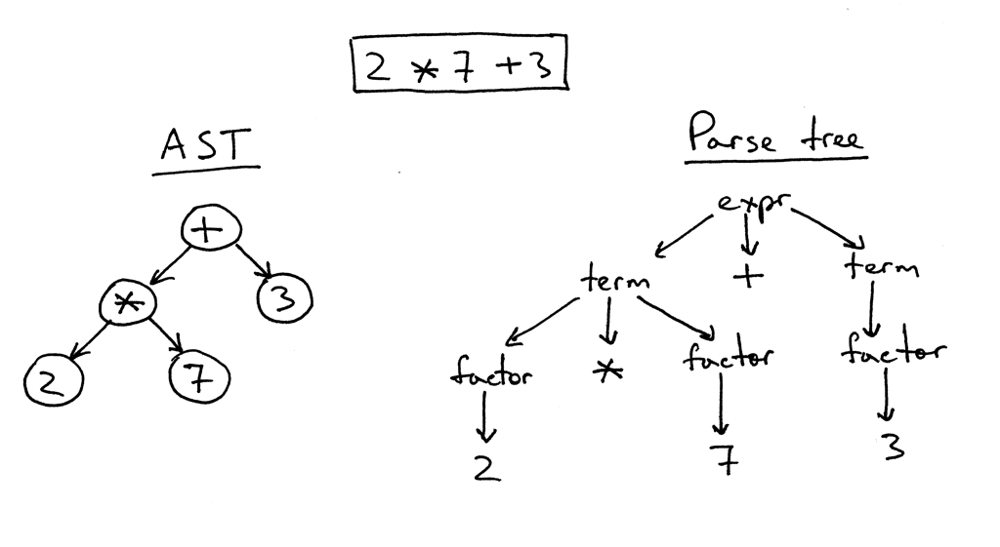

The applications that are already available in the industry are more focused on the rule-based approach. Converting the code to an abstract syntax tree then convert that tree to a chosen language which has shown some promising result but only when the difference between the programming languages is less, also many programming languages cannot be converted into one another because of the lack of higher-level features, etc.
IT’S ALL ABOUT PROGRAMMING LANGUAGES!
The conversion of an Programming Language (Usually Deprecated) into a new programming language
(Usually new and highly used) is called transcoding the language and the tool used is called a
TRANSCODER!
In computer science, an abstract syntax tree (AST), or just syntax tree, is a tree representation of the abstract syntactic structure of source code written in a programming language. Each node of the tree denotes a construct occurring in the source code.
Current methods are Slow, Highly Expensive, Hard to find expertise in old languages.
Natural Language Models have already shown how superior they are when compared to rule-based models because of their deeper complex understanding of language in hand. So using them for this purpose might be really efficient.
Yes! Data! We need that and a lot of it. Supervised learning methods cannot be used because of the lack of enough parallel training data to train the model on. So, Researchers moved to unsupervised methods. Huge GitHub’s corpus of repositories of Python, C++, and Java were used to develop this model.
Using this method they used a huge corpus of C++ code and Python code not explicitly related to each other. Feed the data into and encoder model. The encoder learns to convert the code into something useful (abstract* to a form which makes sense about the actual logical working of the code) learning happens provided there is Cost Function in place. Then the model decodes this abstract form to output in a auto regressive way aka. token by token. Which in this case is logically correct in the desired language.
Precede the first token of output with a token for the desired language.
In the embedding space, similar things are mapped close to each other and have very less cosine distance between them. Performs even better when we have overlap between the two languages. Eg. if represents the same thing in both languages so it will be overlapping with each other in the embedding space. Tokens are also similar when their statistical relationships with things that are same is same.
This trains the Encoder only. Pretraining the model comes from the BERT paper. Which emphasis on the fact that pretraining a model will help the Encoder understand the structure of the code. Which turns out to be very beneficial as it now knows what structures coding languages follow. It understands what will come to the left and the right a token in a programming language depending on the context.
Now we have to train the decoder previously we only trained the encoder. This time we not only masks few tokens but also corrupt the code. The encoder predict the masked tokens and the decoder fixes the corrupted code. We also give a token to specify which language we want to predict the output in which is usually the same language as the input at this step.
We haven’t trained the model in any supervised way yet because we don’t have parallel data. But now we do have an almost trained model. So we use the model to make more training data. How do we do that? We take Python convert it to C++ using the model. Then convert that C++ code back to Python (Back translation) using the model. So now we do have a metric to compare with. This will tell us how well the model is performing.
Tokenizers ensure that meaningless modifications in the code do not impact tokenized sequence . Java Lang tokenizer for Java, the tokenizer of the Standard library for Python and the Clang tokenizer for C++
Single encoder and a single decoder for all programming languages. Alternate between batches of C++, Java, and Python TransCoder optimized with the Adam optimizer. Models implemented in PyTorch
GitHub repositories is used. Function level translation for a simpler evaluation of the model with unit tests Comments in the source code were kept in final datasets and experiments.
From GeeksforGeeks , set of parallel functions which return the same output, but also compute the result with similar algorithm C++, Java, and Python are extracted, to create our validation and test sets. To evaluate translation we use BLEU score. Limitations of above is that they do not take into account the syntactic correctness.
That evaluates whether the hypothesis function generates the same outputs as the reference when given the same inputs Two sets of results for our computational accuracy metric:
This paper shows that the approach of unsupervised machine translation can be applied to source code to create a transcompiler in a fully unsupervised way. Transcoder can easily be generalized to any programming language, does not require any expert knowledge , outperforms commercial solutions by large margins. Automatic TransCoders has the potential to make programmers working in companies or on open source projects more efficient. Decrease the cost of updating older codebase written in obsolete languages. Further help in future innovation.